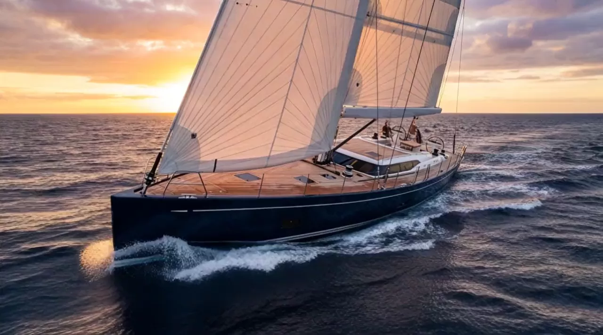

Sailing yachts · est. 1962
Yachts built for the long horizon — hulls laid down for owners who measure distance in oceans, not seasons.
43°16′N · 05°22′E — LA CIOTATThe voyage
A MAREE is trimmed once and left alone. The watch changes, the light goes, the log fills itself line by line — and the boat simply keeps her heading, sea after sea, until morning finds you somewhere better.

Under sail
Naval architecture
The yard
MAREE has occupied the same slipway at La Ciotat since 1962. Three hulls at a time, never more. The joinery shop still smells of oiled teak and the loft floor still carries the scribed lines of every yacht we have ever drawn.
A hull spends fourteen months in the shed before it feels water. Planking is vacuum-laminated by hand; each deck is a single lay of quarter-sawn teak, matched from one log. We weigh everything twice — weight is the enemy of grace, and grace is the whole point.
Commission
A commission begins with a conversation and a berth reserved on the 2029 slipway. From first lines to sea trials: forty months, one owner at a time, and a boat your grandchildren will argue over.
NEXT KEEL LAID — SPRING 2027 · LA CIOTAT, FRANCE